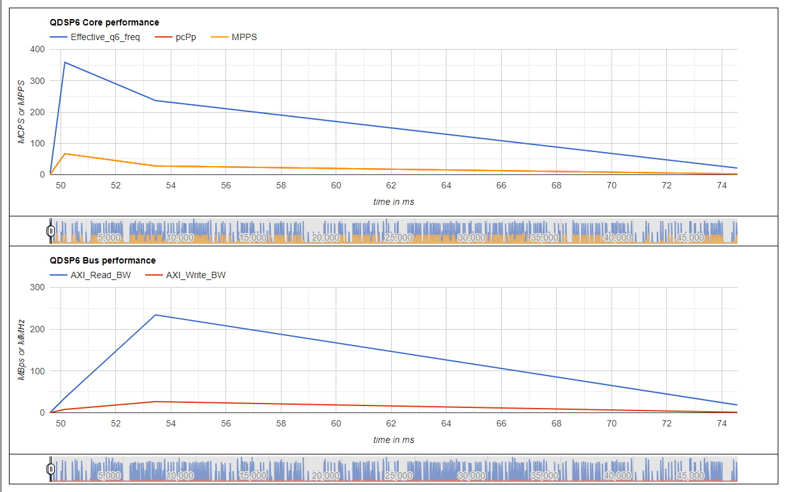
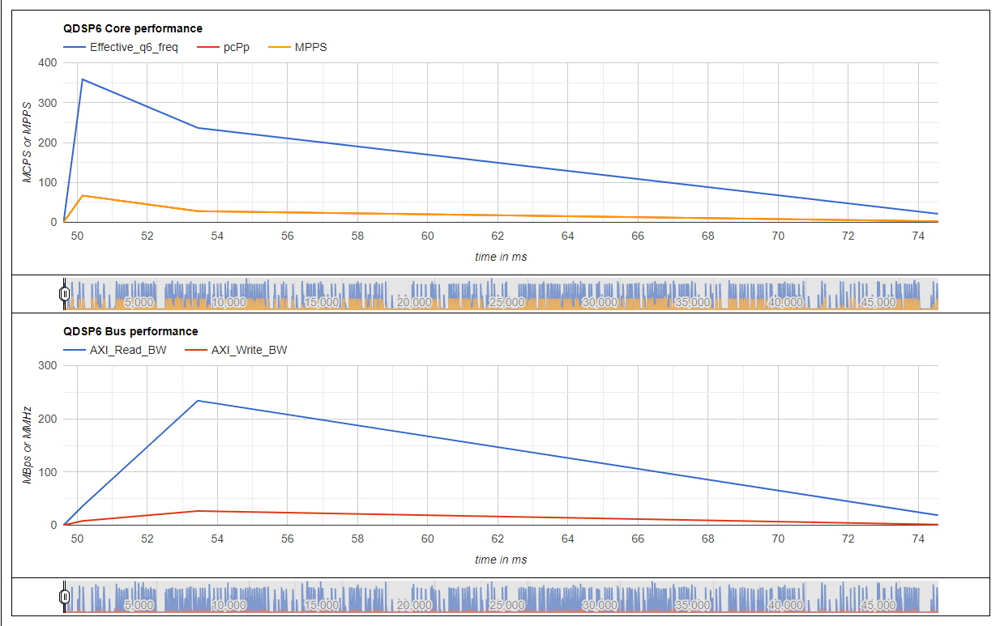

sysMon Parser
The sysMon Parser consumes profiling data generated by the sysMonApp profiler service or sysMon DSP profiler to generate profiling reports.
The sysMon Parser executable located in the following folders:
- Windows version:
$HEXAGON_SDK_ROOT/tools/utils/sysmon/parser_win_v2/HTML_Parser - Linux version:
$HEXAGON_SDK_ROOT/tools/utils/sysmon/parser_linux_v2/HTML_Parser
The parser generates an HTML report along with some CSV files.
Usage
HTML sysMon Parser usage:
sysmon_parser <input_file> [--tlp <input_tlp_file>] [--outdir <output_path>] [--summary]
| Argument | Description |
|---|---|
| input_file | Input binary generated by the sysMonApp profile service or the sysMon profiler. |
| --tlp <input_tlp_file> | Input TLP binary generated by the sysMonApp TLP service. |
| --outdir <output_path> | Folder in which to generate the profiling reports. Default is current directory. |
| --summary | Generate only a sysMon summary report HTML file and skip the generation of all CSV files. |
Non-HTML sysMon Parser usage:
SysmonParser <input_file> <output_path> <mode_type>
| Argument | Description |
|---|---|
| input_file | Input binary generated by the sysMonApp profile service or the sysMon profiler. |
| output_path | Folder in which to generate the profiling reports. |
| mode_type | Identify which mode was used during the collection of the profiling data. Valid values are default and user. |
Files generated
The sysMon Parser generates the following files from the given input_file:
| File | Description |
|---|---|
| sysmon_report.html | Detailed summary report with plots, pie charts, and an HVX analysis (as applicable). |
| post_processed_metrics.csv | Includes all metrics computed for all the samples read from the input sysMon raw binary file. This file is useful for plotting metrics against time, and correlating these metrics with other logs. |
| raw_pmu.csv | Includes all collected PMU raw values for all samples in the BIN file. This file is useful for computing any metrics relevant to the end user. |
| pmuStats.csv | Includes all PMU raw values accumulated for the entire duration of the profiling. (Because not all PMU data are sampled in any given time, missing data is interpolated from the last known values.) |
Following files are generated when STID/MarkerId enabled:
| File | Description |
|---|---|
| SysMonMarkerID_STID.html | Detailed summary report for STID filtered profiling (if enabled) and Markers (if enabled) data. |
| STID_<STID_value>_Metrics.csv | Detailed postprocessed metrics of the software thread bearing <STID_value> as its STID. |
| MarkerID_<Marker_value>_PP_Metrics.csv | Detailed postprocessed metrics of the marked region bearing <Marker_value> as it's marker identifier. |
Following files are generated when TLP binary is provided using --tlp option:
| File | Description |
|---|---|
| SysMontlp_report.html | Detailed summary report with thread level profiling summary and plots. |
| SysMontlp_rawdata.csv | Detailed postprocessed metrics for all the samples read from the input TLP data. |
| SysMontlp_summary_report.csv | Summary containing averages per thread. |
Here are some examples of sysmon_report.html summary report:
Here is a sample from a post_processed_metrics.csv file:
| Sample Index | Sampling period(ms) | SysClock Time(ms) | TimeStamp | Effec Q6 Freq(MHz) | QDSP6 clk(MHz) | Bus Clk vote(MHz) | Measured MEMNOC(MHz) | MPPS | pCPP | AXI_RD_BW_128B | AXI_WR_BW_128B | IU stalls |
|---|---|---|---|---|---|---|---|---|---|---|---|---|
| 1 | 1 | 16:9:30:657 | 13.12 | 1171.2 | 806 | 1555.21 | 2.96 | 4.43 | 0.8 | 0.48 | 2.1 | |
| 1 | 13.8 | 16:9:30:671 | 13.12 | 1171.2 | 806 | 1555.21 | 2.96 | 4.43 | 0.8 | 0.48 | 2.1 |
Starting Lahaina, profiling data can capture samples from aDSP/sDSP while in Island mode as well. The parser generates following additional files for samples collected in Island mode:
| File | Description |
|---|---|
| post_processed_metrics_island.csv | Includes all Island mode metrics computed from raw samples read from the input sysMon raw binary file. |
| raw_pmu_island.csv | Includes raw PMU values corresponding to Island mode operation |
Here is an example of sysmon_report.html with Island report button under 'Detailed report' column to view a summary of Island mode execution.
 

STID and Markers data
Here are some examples of SysMonMarkerID_STID.html report generated with STID filtering/Markers enabled:
Here is an example of MarkerID_5_PP_Metrics.csv containing postprocessed metrics associated with the marker ID as 5 (<Marker_value> = 5):
TLP data
Here is an example of SysMontlp_report.html report:
Here is an example of SysMontlp_rawdata.csv report containing detailed thread-level profiling data:
Metric descriptions
Here are some of the common metrics found in the reports:
| Metric | Unit | Description |
|---|---|---|
| MPPS | Million packets per second | Number of DSP packets. Average MPPS of a real-time use case is constant and independent of the core clock. An increase in MPPS for a non-real-time use case for a given clock indicates effective utilization of L1 and L2 cache. |
| HVX Thread MPPS | Million packets per second | Number of packets executed by the HVX coprocessor. MPPS metrics captures both scalar core and HVX core packets. The MPPS executed on the scalar DSP threads can be calculated: DSP scalar Thread MPPS = (MPPS - HVX Thread MPPS). |
| Effective Q6 frequency | MHz | Actual load on the processor. The ratio of the effective DSP frequency and NPA core clock frequency can be used to get DSP usage: DSP usage = (Effective DSP frequency / NPA core clock). A DSP usage percentage approaching 1 indicates that the DSP core must run at a higher frequency to avoid any glitches or frame drops. MPPS and pCPP metrics together can be used to decide if the DSP core clock vote or bus clock vote must be adjusted in this case. |
| pCPP | Processor cycles per packet | Average processor cycles taken per packet. The lower the pCPP factor, the more the work is done for a given core clock frequency. Core stalls due to bus accesses can result in a higher pCPP factor. Increasing the bus clock vote or prefetching data memory before actual usage can help in lowering this factor and increasing the work done for a given core clock frequency. |
| IU stall frequency | MHz | Derived from measured cycles that the core has stalled on instruction unit cache accesses due to misses. The higher the IU stall frequency, the higher the pCPP factor can be. |
| DU stall frequency | MHz | Derived from measured cycles that the core has stalled on accessing L1 data cache lines due to misses. The higher the DU stall frequency, the higher the pCPP factor can be. DMT (Dynamic Multi Threading) uses DU stalls of stalled thread and schedules other threads for efficient utilization of the core clock. |
| AXI cached read/write bandwidth | MBps | AXI bus bandwidth (DDR accesses) generated by read/write access from the core due to L2 cache line misses. Misses include both demand and prefetch misses in L2 cache. |
| L2 fetch bandwidth | MBps | Bus bandwidth generated by the L2fetch instruction to prefetch data into L2 cache. |
| Clock votes | MHz | Core clock vote for the frequency the DSP is running at. A bus clock vote captures the overall DSP vote for bus clock. Also, the final bus clock frequency (done outside of the DSP) will be based on votes from other subsystems (application processor, modem, and so on). |
| Static clock votes | MHz | Aggregated static votes from all clients for core and bus clocks. |
| DCVS clock votes | MHz | DCVS vote for core and bus clocks. |